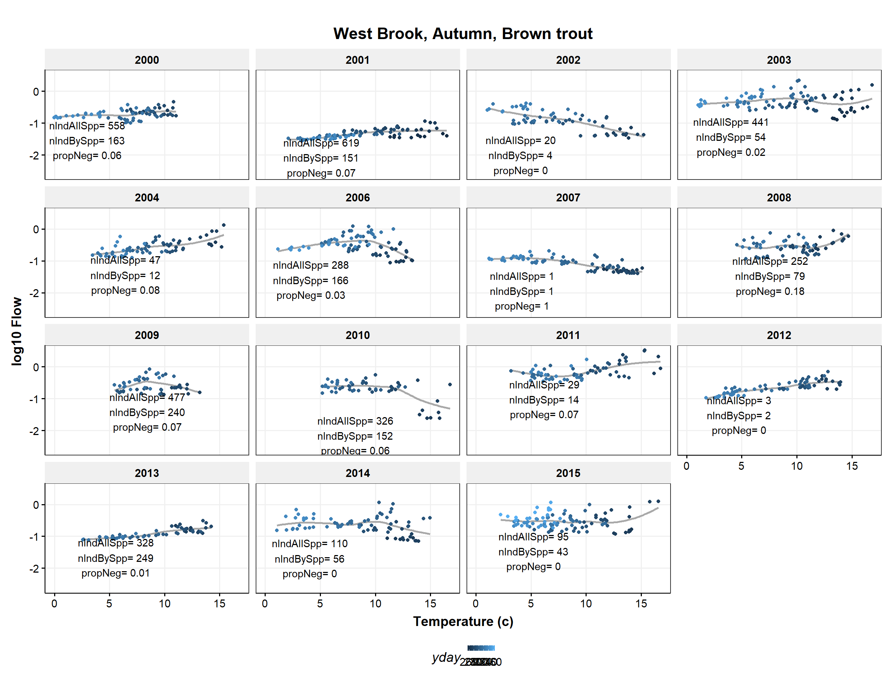
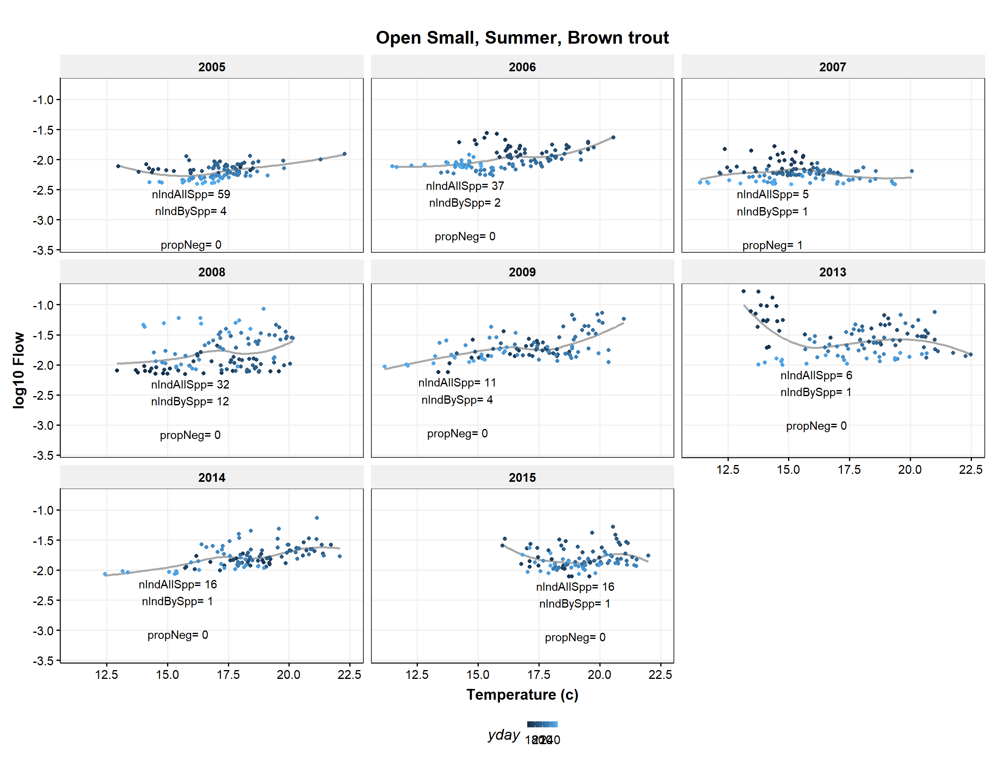

11 Growth in mass
Distribution of growth, negative growth
Causes of neg growth
- Extrinsic
- river, season, flow, temp
- intrinsic
- Sex (fall), life history, section, size, age, previous growth (CF?), movement (section/river)
consequences of neg growth - survival
- future growth (length and mass)
- movement (section/river)
- reprod success?
- local density (con and hetero)
Probs with growth in mass
spawning loss mass in the fall, esp in OB
Interaction between flow:temp, diff btw WB (groundwater dominated at low flow so cold) and tribs (combo of surface and gw?)
Compare growth with t/f cycle diagrams for each river
compare condition factor among species - looks like bkt growing faster in weight
flow/temp circles with gr on top
11.1 Get data
11.1.1 Get electrofishing data
Code
cd <- tar_read(cdWB_electro_target) # raw data
cd1 <- tar_read(cd1_target)
propNegSRS <- tar_read(propNegSRS_target)
propNegSRsN <- tar_read(propNegSRsN_target)
indCountsBySpp <- tar_read(indCountsBySpp_target)
indCounts <- tar_read(indCounts_target)
propNegLabels <- tar_read(propNegLabels_target)11.1.2 Get environmental data
Code
dummy=0 # change to force cache update??
envIn <- tar_read(envIn_target)
envIn_propNeg <- tar_read(envIn_propNeg_target)11.2 Examine raw data
11.2.1 Limit data to consecutive sample captures (cd1)
Previous growth models with length used all possible observations for a fish and interpolated missing observations. Here, we are just looking at consecutive captures to estimate growth over just that interval.
Code
# table(as.numeric(cd$sampleNumber), as.numeric(cd$lagSampleNumber), cd$season, cd$year) |>
# data.frame() |>
# filter(Freq > 0) |>
# arrange(Var1, Var2) |>
# rename(firstCapt = Var1, secondCapt = Var2, season = Var3, year = Var4) |>
# filter(year == 2010)
##### in targets
# cd1 <- cd |>
# filter(sampleNumberDiff == 1,
# tag %notin% c('1bf20ff490', '1bf20ebe4e')) |>
# mutate(negGrowth = grWeight < 0,
# month = month(date),
# dummy = 1) # change to force cache update11.2.2 Find outlier growth rates
11.2.2.1 Negative outlier growth
1bf20ebe4e and 1bf20ff490 have incorrect weights leading to very negative growth rates.
Exclude these tags in cd1_target. The rest of the quite negative growth fish seem plausible (remember we can’t account for stomach contents or egg loss).
Code
cd |>
arrange(grWeightS) |>
dplyr::select(tag, species, season, sampleNumber, lagSampleNumber, observedWeight, lagObservedWeight, grWeightS)# A tibble: 24,304 × 8
tag species season sampleNumber lagSampleNu…¹ obser…² lagOb…³ grWeig…⁴
<chr> <chr> <dbl> <dbl> <dbl> <dbl> <dbl> <dbl>
1 1bf20ebe4e bnt 3 55 56 46.5 4.3 -0.0320
2 257c67e414 bkt 3 59 60 7.3 4.4 -0.00414
3 1bf0fec291 bkt 3 27 28 2.7 1.6 -0.00409
4 1bf20ff490 bnt 2 54 55 167. 41.8 -0.00378
5 257c67b532 bnt 3 63 64 34 25.5 -0.00371
6 00088d1ad4 bnt 3 63 64 4.5 3.6 -0.00330
7 257c67db60 bnt 3 63 64 24.2 19.5 -0.00317
8 00088d0b59 bnt 3 63 64 3.7 3 -0.00314
9 414b684955 ats 3 15 16 5.7 4.3 -0.00289
10 0009f6ec56 bkt 3 75 76 3.5 2.7 -0.00288
# … with 24,294 more rows, and abbreviated variable names ¹lagSampleNumber,
# ²observedWeight, ³lagObservedWeight, ⁴grWeightS11.2.2.2 Positive outlier growth
Lots of very fast growth mostly in the spring. No clear way to exclude fish. 1c2c582218 is excluded in cd1_target because of very high growth in length.
Code
cd1 |>
arrange(desc(grWeightS)) |>
dplyr::select(tag, species, season, sampleNumber, lagSampleNumber, observedWeight, lagObservedWeight, grWeightS) |>
print(n = 20)# A tibble: 24,297 × 8
tag species season sampleNumber lagSampleNum…¹ obser…² lagOb…³ grWei…⁴
<chr> <chr> <dbl> <dbl> <dbl> <dbl> <dbl> <dbl>
1 1bf1020623 bkt 1 29 30 1.3 14.4 0.0199
2 0009f6eef4 bkt 1 77 78 2.3 10.3 0.0160
3 413f4b1845 ats 1 13 14 1.8 8.3 0.0152
4 1bf16366cf bnt 1 33 34 2 10.7 0.0142
5 410a015165 ats 1 13 14 2.1 9.3 0.0142
6 00088d2d2c bkt 1 73 74 1.8 9.2 0.0141
7 410a0f0653 ats 1 13 14 2.2 10.9 0.0138
8 1bf18b7637 bkt 1 33 34 2.5 13.2 0.0137
9 1bf20e4e30 bnt 1 53 54 2.3 12.1 0.0137
10 1bf1930917 ats 1 37 38 1.9 11.7 0.0136
11 411a356c36 ats 1 17 18 2 7.8 0.0136
12 413d675356 ats 1 13 14 2.2 10.3 0.0134
13 41096c506c ats 1 13 14 2.5 10.4 0.0133
14 1bf18b7083 bkt 1 33 34 2.3 10.7 0.0133
15 41097c2230 ats 1 13 14 2.4 11.6 0.0132
16 1bf18b6cc8 ats 1 33 34 2.7 17 0.0132
17 410a043a56 ats 1 13 14 2.6 13.2 0.0130
18 4109740f1b ats 1 13 14 2.4 11.3 0.0130
19 1bf17f0114 bkt 1 33 34 2.3 10.5 0.0130
20 1bf18b8453 bkt 1 33 34 2.3 10.1 0.0129
# … with 24,277 more rows, and abbreviated variable names ¹lagSampleNumber,
# ²observedWeight, ³lagObservedWeight, ⁴grWeightS11.2.3 Raw length, weight data graphs
11.2.3.1 Distribution of growth rates
Code
ggplot(cd1, aes(grWeight, color = speciesGG)) +
geom_freqpoly(bins = 50) +
labs(x = "Growth in mass (/d)", y = "Frequency") +
scale_color_discrete() +
facet_wrap(~season)
11.2.4 Length vs weight by species
Very few outliers
Code
plotLenW <- function(d, s){
ggplot(d |> filter(species == s), aes(observedLength, observedWeight)) +
geom_point(alpha = 0.5, size = 1) +
scale_x_log10() +
scale_y_log10() +
#ggtitle(s) +
labs(x = "Length (mm)", y = "Mass (mg)") +
scale_color_discrete() +
facet_grid(riverGG~year, scales = 'free')
}Code
plotLenW(cd1, "bkt")
Code
plotLenW(cd1, "bnt")
Code
plotLenW(cd1, "ats")
11.2.5 Weight vs weight at next sample
Code
plotWW <- function(d, s){
ggplot(d |> filter(species == s), aes(observedWeight, lagObservedWeight, color = seasonGG)) +
geom_point(alpha = 0.15) +
guides(color = guide_legend(override.aes = list(alpha = 1))) +
ggtitle(s) +
labs(y = "mass (mg)", y = "Mass (mg) at next sample") +
scale_color_discrete() +
facet_wrap(~riverGG, scales = 'free')
}
plotWW(cd1, "bkt")
Code
plotWW(cd1, "bnt")
Code
plotWW(cd1, "ats")
Code
plotWW(cd1, "bkt")
Code
plotWW(cd1, "bkt")
Code
plotWW(cd1, "ats")
11.3 Growth rate in length vs growth rate in mass
Code
ggplot(cd1, aes(grLength, grWeight)) +
geom_point(aes(size = observedWeight), alpha = 0.02) +
guides(size = guide_legend(override.aes = list(alpha = 1))) +
labs(x = "Growth in length", y = "Growth in mass") +
scale_color_discrete() +
facet_grid(seasonGG~speciesGG)
Code
plotGrLenMass <- function(d, s){
ggplot(cd1 |> filter(species==s), aes(grLength, grWeight, color = factor(year))) +
geom_point(alpha = 0.5) +
geom_smooth(method="lm", se=FALSE) +
guides(size = guide_legend(override.aes = list(alpha = 1))) +
labs(x = "Growth in length", y = "Growth in mass") +
scale_color_discrete() +
facet_wrap(~seasonGG, scales = 'free')
}
# facet_wrap(~year)Code
plotGrLenMass(cd1, "bkt")
Code
plotGrLenMass(cd1, "bnt")
Code
plotGrLenMass(cd1, "ats")
11.4 Flow and temperature growth models
11.4.1 Mean flow effect on growth?
Maybe in Jimmy for bnt, or for ats
Code
plotFlowGR <- function(d, r){
ggplot(d |> filter(river == r), aes(meanFlowByRiver, grWeight, color = speciesGG)) +
geom_point(alpha = 0.05) +
geom_smooth(method = "lm", se = FALSE) +
geom_smooth(se = FALSE) +
geom_smooth(method = "lm", se =FALSE, formula = y~poly(x,2)) +
labs(x = "Mean flow", y = "Growth in mass") +
scale_color_discrete() +
#ggtitle(r) +
facet_grid(seasonGG~speciesGG)#, scales = 'free')
}Code
plotFlowGR(cd1, "west brook")
Code
plotFlowGR(cd1, "wb jimmy")Code
plotFlowGR(cd1, "wb mitchell")
Code
plotFlowGR(cd1, "wb obear")
11.4.2 Mean temperature effect on growth?
Maybe in Jimmy for bnt, or for ats
Code
plotTempGR <- function(d, s){
ggplot(d |> filter(seasonGG == s), aes(meanTemperature, grWeight, color = speciesGG)) +
geom_point(alpha = 0.5) +
geom_smooth(method = "lm", se = FALSE, color = 'darkgrey') +
geom_smooth(se = FALSE, color = 'darkgrey') +
geom_smooth(method = "lm", se =FALSE, formula = y~poly(x,2), color = 'darkgrey') +
labs(x = "Mean temperature (c)", y = "Growth in mass") +
scale_color_discrete() +
# ggtitle(s) +
facet_grid(speciesGG~riverGG)#, scales = 'free')
}Code
plotTempGR(cd1, "Spring")
Code
plotTempGR(cd1, "Summer")
Code
plotTempGR(cd1, "Autumn")
Code
plotTempGR(cd1, "Winter")
11.5 Negative vs positive growth
11.5.1 Proportion of fish with negative growth by species/river/season
Code
ggplot(cd1 |> filter(!is.na(negGrowth)), aes(negGrowth)) +
geom_bar() +
facet_grid(seasonGG~speciesGG+riverGG, scales = "free")
Code
ggplot(propNegSRS |> filter(n > 50), aes(seasonGG, propNeg, color = riverGG, group = riverGG)) +
geom_point(aes(size = n)) +
geom_line() +
labs(x = "Season", y = "Proportion of fish with negative growth in mass") +
scale_color_discrete() +
facet_wrap(~speciesGG)
Code
plotPropNegByRiver <- function(d, spp){
ggplot(d |> filter(n > 10, speciesGG == spp),
aes(year, propNeg, color = factor(seasonGG))) +
geom_point(aes(size = n)) +
geom_line() +
labs(x = "Year", y = "Proportion of fish with negative growth in mass") +
scale_color_discrete() +
facet_wrap(~riverGG)
}Code
plotPropNegByRiver(propNegSRsN, "Brook trout")Code
plotPropNegByRiver(propNegSRsN, "Brown trout")
Code
plotPropNegByRiver(propNegSRsN, "Atlantic salmon")
11.5.2 Proportion of fish with negative growth by species/river/sampleNumber
Break down season by year
Code
ggplot(propNegSRsN |> filter(n > 10), aes(year, propNeg, color = riverGG)) +
geom_point(aes(size = n)) +
geom_line() +
labs(x = "Year", y = "Proportion of fish with negative growth in mass") +
scale_color_discrete() +
facet_grid(seasonGG~speciesGG)
11.6 Environmental effects on proportion of fish with negative growth
11.6.1 Proportion of fish with negative growth by flow
Code
ggplot(propNegSRsN |> filter(n > 10, riverGG == "West Brook"), aes(mF, propNeg, color = riverGG)) +
geom_point(aes(size = n)) +
geom_smooth(method = "lm", se = FALSE) +
scale_y_continuous("Proportion of fish with negative growth in mass") +
scale_x_log10("Mean flow") +
scale_color_discrete() +
ggtitle("West Brook") +
facet_grid(seasonGG~speciesGG)
Code
ggplot(propNegSRsN |> filter(n > 10, riverGG != "West Brook"), aes(mF, propNeg, color = riverGG)) +
geom_point(aes(size = n)) +
geom_smooth(method = "lm", se = FALSE) +
scale_y_continuous("Proportion of fish with negative growth in mass") +
scale_x_log10("Mean flow") +
scale_color_discrete() +
ggtitle("Tributaries") +
facet_grid(seasonGG~speciesGG)
11.6.2 Proportion of fish with negative growth by temperature
Code
plotNegGrowth_temp <- function(d, s){
ggplot(d |> filter(n > 10, seasonGG == s), aes(mT, propNeg, color = riverGG)) +
geom_point(aes(size = n)) +
geom_smooth(method = "lm", se = FALSE) +
scale_y_continuous("Proportion of fish with negative growth in mass") +
scale_x_continuous("Mean temperature (C)") +
scale_color_discrete() +
ggtitle(s) +
facet_grid(riverGG~speciesGG)
}Code
plotNegGrowth_temp(propNegSRsN, "Spring")
Code
plotNegGrowth_temp(propNegSRsN, "Summer")
Code
plotNegGrowth_temp(propNegSRsN, "Autumn")
Code
plotNegGrowth_temp(propNegSRsN, "Winter")
11.6.3 Proportion of fish with negative growth by 3 species fish counts
Code
ggplot(propNegSRsN |> filter(n > 10, riverGG == "West Brook"), aes(nInd, propNeg, color = riverGG)) +
geom_point(aes(size = n)) +
geom_smooth(method = "lm", se = FALSE) +
scale_y_continuous("Proportion of fish with negative growth in mass") +
scale_x_log10("3 species count") +
scale_color_discrete() +
ggtitle("West Brook") +
facet_grid(seasonGG~speciesGG)
Code
ggplot(propNegSRsN |> filter(n > 10, riverGG != "West Brook"), aes(nInd, propNeg, color = riverGG)) +
geom_point(aes(size = n)) +
geom_smooth(method = "lm", se = FALSE) +
scale_y_continuous("Proportion of fish with negative growth in mass") +
scale_x_log10("3 species count") +
scale_color_discrete() +
ggtitle("Tributaries") +
facet_grid(seasonGG~speciesGG)
11.6.4 Proportion of fish with negative growth by conspecific fish counts
Code
ggplot(propNegSRsN |> filter(n > 10, riverGG == "West Brook"), aes(nIndBySpp, propNeg, color = riverGG)) +
geom_point(aes(size = n)) +
geom_smooth(method = "lm", se = FALSE) +
scale_y_continuous("Proportion of fish with negative growth in mass") +
scale_x_log10("conspecific count") +
scale_color_discrete() +
ggtitle("West Brook") +
facet_grid(seasonGG~speciesGG)
Code
ggplot(propNegSRsN |> filter(n > 10, riverGG != "West Brook"), aes(nIndBySpp, propNeg, color = riverGG)) +
geom_point(aes(size = n)) +
geom_smooth(method = "lm", se = FALSE) +
scale_y_continuous("Proportion of fish with negative growth in mass") +
scale_x_log10("conspecific count") +
scale_color_discrete() +
ggtitle("Tributaries") +
facet_grid(seasonGG~speciesGG)
11.7 F/T cycle graphs
11.7.1 Mean flow and temperature
Code
plot_mT_mF <- function(s, plotText){
ggplot(propNegSRsN |> filter(n > 25, speciesGG == s), aes(mT, mF_log10, color = factor(seasonGG))) +
geom_point(aes(size = propNeg)) +
{if(plotText) geom_text(aes(label = year), vjust = 0, nudge_y = -0.075, check_overlap = FALSE, size = 3)} +
ggtitle(s) +
labs(x = "Mean temperature (C)", y = "log10 of mean Flow") +
scale_color_discrete() +
facet_wrap(~riverGG, scales = "free")
}
plot_mT_mF("Brook trout", FALSE)
Code
plot_mT_mF("Brown trout", FALSE)
Code
plot_mT_mF("Atlantic salmon", FALSE)
11.7.2 Mean flow and temperature with year labels
Code
plot_mT_mF("Brook trout", TRUE)
Code
plot_mT_mF("Brown trout", TRUE)
Code
plot_mT_mF("Atlantic salmon", TRUE)
Mean flow and temperature values for each season and year for the West Brook
Not very informative
Code
ggplot(propNegSRsN |> filter(n > 10, riverGG == 'West Brook') |> arrange(riverGG, speciesGG, year, seasonGG), aes(mT, mF_log10)) +
geom_line() +
geom_point(aes(color = factor(seasonGG))) +
facet_wrap(~year)
11.7.3 Yearly temperature/flow cycles of daily data
Code
plotMerged <- function(d, r, minYear = 2000, maxYear = 2017){
ggplot(d |> filter(riverGG == r, year %in% c(minYear:maxYear)),
aes(temperature, log10(flowByRiverm3s), color = seasonGG, group = seasonGG)) +
geom_point() +
geom_smooth(se = FALSE) +
#geom_line() +
labs(x = "Temperature (C)", y = "log10 of Flow") +
scale_color_discrete() +
ggtitle(r) +
facet_wrap(~year, scales = 'free')
}
# this plots f/t for all three species - good for filling in gapsCode
plotMerged(envIn_propNeg, "West Brook", 2000, 2017)
Code
plotMerged(envIn_propNeg, "Open Large", 2002, 2017)
Code
plotMerged(envIn_propNeg, "Open Small", 2002, 2017)
Code
plotMerged(envIn_propNeg, "Isolated Small", 2002, 2017)
11.7.4 Smooths of temperature/flow cycles of daily data by season
Code
plotMergedBySeason <- function(d, r, minYear = 2000, maxYear = 2017) {
ggplot(d |> filter(riverGG == r, year %in% c(minYear:maxYear), !is.na(seasonGG)),
aes(temperature, log10(flowByRiverm3s),
color = factor(year), group = year
)
) +
#geom_point() +
geom_smooth(se = FALSE) +
labs(x = "Temperature (C)", y = "log10 of Flow") +
scale_color_discrete() +
ggtitle(r) +
facet_wrap(~seasonGG, scales = 'free')
}Code
plotMergedBySeason(envIn_propNeg, "West Brook", 2000, 2017)
Code
plotMergedBySeason(envIn_propNeg, "Open Large", 2002, 2017)
Code
plotMergedBySeason(envIn_propNeg, "Open Small", 2002, 2017)
Code
plotMergedBySeason(envIn_propNeg, "Isolated Small", 2002, 2017)
11.7.5 F/T cycles with labels
Plot F/T cycles by river, season, species with label for propNeg and conspecific and all-species abundances
Code
plotMergedBySeasonByEverything <- function(d, d2, r, s, spp, minYear = 2000, maxYear = 2017){
ggplot(d |>
filter(riverGG == r,
year %in% c(minYear:maxYear),
!is.na(seasonGG),
seasonGG == s,
speciesGG == spp),
aes(temperature, log10(flowByRiverm3s))
) +
geom_smooth(se = FALSE, color = "darkgrey") +
geom_point(aes(color = yday)) +
geom_text(aes(
x = minTemp + 3.0,
y = log10(minFlow) - 1,
label = paste("propNeg=",round(propNeg, 2))
#size = propNeg
),
data = d2|>
filter(riverGG == r,
year %in% c(minYear:maxYear),
seasonGG == s,
speciesGG == spp)
) +
geom_text(aes(
x = minTemp + 3.0,
y = log10(minFlow) - 0.3,
label = paste(paste("nIndAllSpp=", nInd), paste("nIndBySpp=", nIndBySpp), sep = "\n")
),
data = d2|>
filter(riverGG == r,
year %in% c(minYear:maxYear),
seasonGG == s,
speciesGG == spp)
) +
labs(x = "Temperature (c)", y = "log10 Flow") +
ggtitle(paste(r, s, spp, sep = ", ")) +
facet_wrap(~year)
}11.7.5.1 West Brook
Code
plotMergedBySeasonByEverything(envIn_propNeg, propNegLabels, "West Brook", "Spring", "Brook trout", 2000, 2017)
Code
plotMergedBySeasonByEverything(envIn_propNeg, propNegLabels, "West Brook", "Spring", "Brown trout", 2000, 2017)
Code
plotMergedBySeasonByEverything(envIn_propNeg, propNegLabels, "West Brook", "Spring", "Atlantic salmon", 2000, 2017)
Code
plotMergedBySeasonByEverything(envIn_propNeg, propNegLabels, "West Brook", "Summer", "Brook trout", 2000, 2017)
Code
plotMergedBySeasonByEverything(envIn_propNeg, propNegLabels, "West Brook", "Summer", "Brown trout", 2000, 2017)
Code
plotMergedBySeasonByEverything(envIn_propNeg, propNegLabels, "West Brook", "Summer", "Atlantic salmon", 2000, 2017)
Code
plotMergedBySeasonByEverything(envIn_propNeg, propNegLabels, "West Brook", "Autumn", "Brook trout", 2000, 2017)
Code
plotMergedBySeasonByEverything(envIn_propNeg, propNegLabels, "West Brook", "Autumn", "Brown trout", 2000, 2017)
Code
plotMergedBySeasonByEverything(envIn_propNeg, propNegLabels, "West Brook", "Autumn", "Atlantic salmon", 2000, 2017)
Code
plotMergedBySeasonByEverything(envIn_propNeg, propNegLabels, "West Brook", "Winter", "Brook trout", 2000, 2017)
Code
plotMergedBySeasonByEverything(envIn_propNeg, propNegLabels, "West Brook", "Winter", "Brown trout", 2000, 2017)Code
plotMergedBySeasonByEverything(envIn_propNeg, propNegLabels, "West Brook", "Winter", "Atlantic salmon", 2000, 2017)
11.7.5.2 Open Large
Code
plotMergedBySeasonByEverything(envIn_propNeg, propNegLabels, "Open Large", "Spring", "Brook trout", 2000, 2017)
Code
plotMergedBySeasonByEverything(envIn_propNeg, propNegLabels, "Open Large", "Spring", "Brown trout", 2000, 2017)
Code
plotMergedBySeasonByEverything(envIn_propNeg, propNegLabels, "Open Large", "Spring", "Atlantic salmon", 2000, 2017)
Code
plotMergedBySeasonByEverything(envIn_propNeg, propNegLabels, "Open Large", "Summer", "Brook trout", 2000, 2017)
Code
plotMergedBySeasonByEverything(envIn_propNeg, propNegLabels, "Open Large", "Summer", "Brown trout", 2000, 2017)
Code
plotMergedBySeasonByEverything(envIn_propNeg, propNegLabels, "Open Large", "Summer", "Atlantic salmon", 2000, 2017)
Code
plotMergedBySeasonByEverything(envIn_propNeg, propNegLabels, "Open Large", "Autumn", "Brook trout", 2000, 2017)
Code
plotMergedBySeasonByEverything(envIn_propNeg, propNegLabels, "Open Large", "Autumn", "Brown trout", 2000, 2017)
Code
plotMergedBySeasonByEverything(envIn_propNeg, propNegLabels, "Open Large", "Autumn", "Atlantic salmon", 2000, 2017)
Code
plotMergedBySeasonByEverything(envIn_propNeg, propNegLabels, "Open Large", "Winter", "Brook trout", 2000, 2017)
Code
plotMergedBySeasonByEverything(envIn_propNeg, propNegLabels, "Open Large", "Winter", "Brown trout", 2000, 2017)
Code
plotMergedBySeasonByEverything(envIn_propNeg, propNegLabels, "Open Large", "Winter", "Atlantic salmon", 2000, 2017)
11.7.5.3 Open Small
Code
plotMergedBySeasonByEverything(envIn_propNeg, propNegLabels, "Open Small", "Spring", "Brook trout", 2000, 2017)
Code
plotMergedBySeasonByEverything(envIn_propNeg, propNegLabels, "Open Small", "Spring", "Brown trout", 2000, 2017)
Code
plotMergedBySeasonByEverything(envIn_propNeg, propNegLabels, "Open Small", "Summer", "Brook trout", 2000, 2017)
Code
plotMergedBySeasonByEverything(envIn_propNeg, propNegLabels, "Open Small", "Summer", "Brown trout", 2000, 2017)
Code
plotMergedBySeasonByEverything(envIn_propNeg, propNegLabels, "Open Small", "Autumn", "Brook trout", 2000, 2017)
Code
plotMergedBySeasonByEverything(envIn_propNeg, propNegLabels, "Open Small", "Autumn", "Brown trout", 2000, 2017)
Code
plotMergedBySeasonByEverything(envIn_propNeg, propNegLabels, "Open Small", "Winter", "Brook trout", 2000, 2017)
Code
plotMergedBySeasonByEverything(envIn_propNeg, propNegLabels, "Open Small", "Winter", "Brown trout", 2000, 2017)
11.7.5.4 Isolated Small
Code
plotMergedBySeasonByEverything(envIn_propNeg, propNegLabels, "Isolated Small", "Spring", "Brook trout", 2000, 2017)
Code
plotMergedBySeasonByEverything(envIn_propNeg, propNegLabels, "Isolated Small", "Summer", "Brook trout", 2000, 2017)
Code
plotMergedBySeasonByEverything(envIn_propNeg, propNegLabels, "Isolated Small", "Autumn", "Brook trout", 2000, 2017)
Code
plotMergedBySeasonByEverything(envIn_propNeg, propNegLabels, "Isolated Small", "Winter", "Brook trout", 2000, 2017)
11.8 Logistic models for environmental effects on propNeg
11.8.1 Standardize flow and temperature
Code
# getZ <- function(d){
# list(
# mean = mean(d, na.rm = TRUE),
# sd = sd(d, na.rm = TRUE)
# )
# }
# fZ <- getZ(cd1$meanFlowByRiver)
# fT <- getZ(cd1$meanTemperature)
z <- cd1 |>
group_by(season) |>
summarize(fZMean = mean(meanFlowByRiver, na.rm = TRUE),
fZSd = sd(meanFlowByRiver, na.rm = TRUE),
fTMean = mean(meanTemperature, na.rm = TRUE),
fTSd = sd(meanTemperature, na.rm = TRUE)
)
cd1 <- cd1 |>
left_join(z) |>
mutate(meanFlowByRiverZ = (meanFlowByRiver - fZMean)/fZSd,
meanTempZ = (meanTemperature - fTMean)/fTSd)11.8.2 Raw data with logistic fit for flow effect
Code
ggplot(cd1 |> filter(!is.na(negGrowth)), aes(meanFlowByRiverZ, negGrowth * 1, color = river)) +
geom_point(alpha = 0.1) +
geom_smooth(method = "glm",
method.args = list(family = "binomial"),
se = FALSE) +
labs(y = "Probability of negative growth in mass", x = "Mean flow") +
facet_grid(season~species)
Code
ggplot(cd1 |> filter(!is.na(negGrowth)), aes(meanFlowByRiverZ, negGrowth * 1, color = river)) +
geom_point(alpha = 0.1) +
geom_smooth(method = "glm",
method.args = list(family = "binomial"),
se = FALSE) +
labs(y = "Probability of negative growth in mass", x = "Mean flow") +
facet_grid(season~species+river)
11.8.3 Raw data with logistic fit for temperature effect
Code
ggplot(cd1 |> filter(!is.na(negGrowth), meanTempZ > -4), aes(meanTempZ, negGrowth * 1, color = river)) +
geom_point(alpha = 0.1) +
geom_smooth(method = "glm",
method.args = list(family = "binomial"),
se = FALSE) +
labs(y = "Probability of negative growth in mass", x = "Mean temperature") +
facet_grid(season~species)
11.9 Logistic model for flow and temperature, one species at a time
Species occupy different rivers, so an all-species model will have unequal river representation across species and don’t need to predict where species are not.
Need to think through whether these models make sense…
Code
runSppModels <- function(d, speciesIn) {
models =
tibble(model =
c(
'negGrowth ~ meanFlowByRiverZ * meanTempZ * river',
'negGrowth ~ meanFlowByRiverZ * meanTempZ + river',
'negGrowth ~ meanFlowByRiverZ + meanTempZ + river',
'negGrowth ~ meanFlowByRiverZ * meanTempZ' ,
'negGrowth ~ meanFlowByRiverZ * meanTempZ * river * factor(season)',
'negGrowth ~ meanFlowByRiverZ + meanTempZ * river * factor(season)',
'negGrowth ~ meanFlowByRiverZ * meanTempZ * river * factor(season) * observedWeight'
)
) |>
mutate(
fit = map(model, ~glm(.x, family = "binomial", data = d |> filter(species == speciesIn))),
glanced = map(fit, broom::glance),
tidied = map(fit, broom::tidy)
)
return(models)
}11.9.1 Predict p(neg growth in mass)
Code
predictSpp <- function(dIn, modIn, speciesIn){
d <- dIn |> filter(species == speciesIn)
byAIC = modIn |>
unnest(glanced) |>
arrange(AIC) |>
dplyr::select(model, AIC, df.residual, fit, tidied)
predDSpp <- expand.grid(
meanFlowByRiverZ = seq(-1.5,1.5,0.25),
meanTempZ = seq(-1.5,1.5,0.25),
river = unique(d$river),
season = unique(d$season),
observedWeight = seq(min(d$observedWeight, na.rm = TRUE), max(d$observedWeight, na.rm = TRUE), 40)
)
pred <- add_column(predDSpp,
pred = predict.glm(byAIC[1,]$fit[[1]], predDSpp, type = "response")) |>
mutate(groupT = paste(river, season, meanTempZ, sep = "_"),
groupF = paste(river, season, meanFlowByRiverZ, sep = "_"))
return(
list(
pred = pred,
byAIC = byAIC
)
)
} 11.9.2 Brook trout
Code
speciesIn <- "bkt"
modBKT <- runSppModels(cd1, speciesIn)
predBKT <- predictSpp(cd1, modBKT, speciesIn)
ggplot(predBKT$pred |> filter(meanTempZ %in% c(-1.5,0,1.5), meanFlowByRiverZ %in% c(-1.5,0,1.5)), aes(observedWeight, pred, group = groupF)) +
geom_line(aes(color = factor(meanFlowByRiverZ))) +
labs(y = "Probability of negative growth in mass", x = "Body mass (mg)") +
facet_grid(season~river+meanTempZ)
11.9.3 Brown trout
Code
speciesIn <- "bnt"
modBNT <- runSppModels(cd1, speciesIn)
predBNT <- predictSpp(cd1, modBNT, speciesIn)
ggplot(predBNT$pred |> filter(meanTempZ %in% c(-1.5,0,1.5), meanFlowByRiverZ %in% c(-1.5,0,1.5)), aes(observedWeight, pred, group = groupF)) +
geom_line(aes(color = factor(meanFlowByRiverZ))) +
labs(y = "Probability of negative growth in mass", x = "Body mass (mg)") +
facet_grid(season~river+meanTempZ)
11.9.4 Atlantic salmon
Code
speciesIn <- "ats"
modATS <- runSppModels(cd1, speciesIn)
predATS <- predictSpp(cd1, modATS, speciesIn)
ggplot(predATS$pred |> filter(meanTempZ %in% c(-1.5,0,1.5), meanFlowByRiverZ %in% c(-1.5,0,1.5)), aes(observedWeight, pred, group = groupF)) +
geom_line(aes(color = factor(meanFlowByRiverZ))) +
labs(y = "Probability of negative growth in mass", x = "Body mass (mg)") +
facet_grid(season~river+meanTempZ)
11.10 Two growth models
11.10.1 Size-adjusted growth model
11.10.1.1 Get l-w relationships for size-adjusted growth model
Here, we will explore size-independent growth in mass, see Sigourney, D. B., B H Letcher, M. Obedzinski, and R. A. Cunjak. “Size-Independent Growth in Fishes: Patterns, Models and Metrics.” Journal of Fish Biology 72, no. 10 (2008): 2435–55. https://doi.org/10.1111/j.1095-8649.2008.01830.x. Size-independent growth (grWeightS) is calculated in getDataElectro_targets.R file using addSizeIndGrowthWeight().
grWeightS uses the slope of log(observedWeight) ~ log(grWeight) for each river and season and species to adjust growth.
A simple linear models shows we need to get separate slopes for each river and season and species.
Code
ggplot(cd1 |> filter(grWeight > 0),
aes(log(observedWeight), log(grWeight), color = riverGG)) +
geom_point(alpha = 0.05) +
geom_smooth(method = "lm", se = FALSE) +
labs(y = "Log of mass (mg)", x = "Log of growth in mass") +
scale_color_discrete() +
facet_grid(seasonGG~speciesGG)
Code
mod0 <- lm(log(grWeight) ~ log(observedWeight), data = cd1 |> filter(grWeight > 0))
mod1 <- lm(log(grWeight) ~ log(observedWeight) * river, data = cd1 |> filter(grWeight > 0))
mod2 <- lm(log(grWeight) ~ log(observedWeight) * river * factor(season), data = cd1 |> filter(grWeight > 0))
mod3 <- lm(log(grWeight) ~ log(observedWeight) * factor(season), data = cd1 |> filter(grWeight > 0))
mod4 <- lm(log(grWeight) ~ log(observedWeight) * river * factor(season) * species, data = cd1 |> filter(grWeight > 0))
AIC(mod0,mod1,mod2,mod3,mod4) |> arrange(AIC) df AIC
mod4 73 43925.12
mod2 33 47539.49
mod3 9 48036.13
mod1 9 64659.88
mod0 3 64744.5911.10.2 Compare size-adjusted and instantaneous growth
Differences don’t seem big enough to warrant the extra complexity from the s-adjusted growth metric
Code
ggplot(cd1, aes(grWeight, grWeightS, color = riverGG)) +
geom_point(alpha = 0.05) +
geom_smooth(method = "lm", se = FALSE) +
geom_abline(intercept = 0, slope = 1) +
labs(y = "Gowth in mass", x = "Size-adjusted growth in mass") +
scale_color_discrete() +
facet_grid(seasonGG~speciesGG)
Code
ggplot(cd1 |>
dplyr::select(observedWeight, grWeight, grWeightS, seasonGG, speciesGG) |>
pivot_longer(cols = c(grWeight, grWeightS)),
aes(log(observedWeight), value, color = name)) +
geom_point(alpha = 0.05 ) +
geom_smooth(method = "lm", se = FALSE) +
labs(y = "Log of mass (mg)", x = "Growth in mass") +
scale_color_discrete() +
facet_grid(seasonGG~speciesGG)
11.11 Compare growth in length and mass
11.11.1 Growth rate in length vs size-independent growth rate in mass
Code
ggplot(cd1, aes(grLength, grWeightS)) +
geom_point(aes(size = observedWeight), alpha = 0.02) +
guides(size = guide_legend(override.aes = list(alpha = 1))) +
labs(x = "Growth in length", y = "Size-adjusted growth in mass") +
scale_color_discrete() +
facet_grid(seasonGG~speciesGG)
11.11.2 Pairs plots
11.12 Deprecated logistic models below
11.12.1 Logistic model for flow and temperature, all species
11.12.2 Model selection
Code
modSpecies <- c("bkt", "ats", "bnt")
cd1Mod <- cd1 |> filter(species == modSpecies)
modFT0 <- glm(negGrowth ~ meanFlowByRiverZ * meanTempZ * river * species, family = "binomial", data = cd1Mod)
modFT1 <- glm(negGrowth ~ meanFlowByRiverZ * meanTempZ * river + species, family = "binomial", data = cd1Mod)
modFT2 <- glm(negGrowth ~ meanFlowByRiverZ * meanTempZ + river + species, family = "binomial", data = cd1Mod)
modFT3 <- glm(negGrowth ~ meanFlowByRiverZ + meanTempZ + river + species, family = "binomial", data = cd1Mod)
modFT4 <- glm(negGrowth ~ meanFlowByRiverZ * meanTempZ + river , family = "binomial", data = cd1Mod)
modFT5 <- glm(negGrowth ~ meanFlowByRiverZ * meanTempZ + river , family = "binomial", data = cd1Mod)
modFT6 <- glm(negGrowth ~ meanFlowByRiverZ * meanTempZ + species , family = "binomial", data = cd1Mod)
modFT7 <- glm(negGrowth ~ meanFlowByRiverZ * meanTempZ, family = "binomial", data = cd1Mod)
modFT8 <- glm(negGrowth ~ meanFlowByRiverZ * meanTempZ * river * factor(season) + species, family = "binomial", data = cd1Mod)
modFT9 <- glm(negGrowth ~ meanFlowByRiverZ * meanTempZ * river * factor(season) * species, family = "binomial", data = cd1Mod)
modFT10 <- glm(negGrowth ~ meanFlowByRiverZ + meanTempZ * river * factor(season) * species, family = "binomial", data = cd1Mod)
modFT11 <- glm(negGrowth ~ meanFlowByRiverZ * meanTempZ * river * factor(season) * observedWeight + species, family = "binomial", data = cd1Mod)
modFT12 <- glm(negGrowth ~ meanFlowByRiverZ * meanTempZ * river * factor(season) * species * observedWeight, family = "binomial", data = cd1Mod)
AIC(modFT0, modFT1,modFT2, modFT3,modFT4,modFT5, modFT6,modFT7,modFT8,modFT9,modFT10, modFT11, modFT12) |> arrange(AIC) df AIC
modFT8 66 5227.562
modFT1 18 6284.942
modFT0 36 6301.485
modFT2 9 6335.388
modFT3 8 6357.873
modFT6 6 6430.260
modFT4 7 6563.756
modFT5 7 6563.756
modFT7 4 6741.248
modFT12 261 89838.173
modFT11 130 92820.102
modFT9 137 109414.182
modFT10 71 124492.60411.12.3 Model results for additive model (not very good)
Code
# https://www.statology.org/logistic-regression-in-r/
#summary(modFT3)
#anova(modFT3)
pscl::pR2(modFT3)["McFadden"]fitting null model for pseudo-r2 McFadden
0.06726277 Code
caret::varImp(modFT3) |> arrange(desc(Overall)) Overall
speciesbnt 12.6585340
meanFlowByRiverZ 12.2576677
riverwest brook 4.5864102
speciesbkt 4.2572209
riverwb mitchell 4.1438695
riverwb obear 3.3497197
meanTempZ 0.256237411.12.4 Model results for full interactive model (best model)
Code
# https://www.statology.org/logistic-regression-in-r/
#summary(modFT11)
#anova(modFT11)
# full interaction
pscl::pR2(modFT11)["McFadden"]fitting null model for pseudo-r2 McFadden
-12.61337 Code
caret::varImp(modFT11) |> arrange(desc(Overall)) Overall
speciesbnt 1062734471
speciesbkt 290104887
observedWeight 121701702
factor(season)3:observedWeight 121673397
meanFlowByRiverZ:observedWeight 120721958
riverwest brook:observedWeight 120597554
riverwest brook:factor(season)3:observedWeight 118826359
meanFlowByRiverZ:riverwest brook:observedWeight 118561009
meanFlowByRiverZ:factor(season)3:observedWeight 117793666
factor(season)2:observedWeight 115204393
meanFlowByRiverZ:riverwest brook:factor(season)3:observedWeight 114770462
riverwest brook:factor(season)2:observedWeight 112763409
meanFlowByRiverZ:factor(season)2:observedWeight 108818541
meanFlowByRiverZ:riverwest brook:factor(season)2:observedWeight 107236636
factor(season)4:observedWeight 90833626
riverwest brook:factor(season)4:observedWeight 85813387
meanFlowByRiverZ:riverwb mitchell:factor(season)2:observedWeight 76804632
meanFlowByRiverZ:factor(season)4:observedWeight 75011164
riverwb mitchell:factor(season)2:observedWeight 74927810
meanFlowByRiverZ:riverwest brook:factor(season)4:observedWeight 72359155
meanFlowByRiverZ:riverwb mitchell:observedWeight 70463657
riverwb mitchell:observedWeight 68589652
meanFlowByRiverZ:riverwb mitchell:factor(season)3:observedWeight 67014267
riverwb mitchell:factor(season)3:observedWeight 65230894
meanTempZ:factor(season)4:observedWeight 64191266
meanTempZ:riverwest brook:factor(season)4:observedWeight 63102612
meanTempZ:observedWeight 57451124
meanTempZ:factor(season)3:observedWeight 56538767
meanTempZ:riverwest brook:observedWeight 56008860
meanTempZ:riverwest brook:factor(season)2:observedWeight 55882978
meanTempZ:factor(season)2:observedWeight 55520059
meanFlowByRiverZ:riverwb obear:factor(season)2:observedWeight 53016866
meanFlowByRiverZ:riverwb obear:factor(season)2 52925342
meanFlowByRiverZ:meanTempZ:riverwest brook:factor(season)4:observedWeight 52612283
riverwest brook 52589753
meanTempZ:riverwest brook:factor(season)3:observedWeight 52557912
meanTempZ:riverwb obear:factor(season)2 52109976
meanFlowByRiverZ:meanTempZ:riverwb obear:factor(season)2 51237151
meanFlowByRiverZ:meanTempZ:factor(season)4:observedWeight 50758977
riverwb mitchell:factor(season)4:observedWeight 49899714
riverwest brook:factor(season)2 49566663
riverwb obear:factor(season)2:observedWeight 48575461
riverwb obear:factor(season)2 48547149
meanFlowByRiverZ:meanTempZ:riverwb obear:factor(season)4:observedWeight 48147137
meanFlowByRiverZ 46721852
meanFlowByRiverZ:riverwb mitchell:factor(season)4:observedWeight 44917079
meanTempZ:riverwb obear:factor(season)4:observedWeight 43958036
meanFlowByRiverZ:meanTempZ:observedWeight 43939613
meanFlowByRiverZ:riverwb obear:factor(season)4:observedWeight 43696764
riverwest brook:factor(season)3 43603188
riverwb obear:factor(season)4:observedWeight 43355643
meanFlowByRiverZ:riverwb obear:factor(season)3:observedWeight 43246382
riverwb obear:factor(season)4 42643452
meanFlowByRiverZ:riverwb obear:factor(season)4 42587980
meanFlowByRiverZ:meanTempZ:factor(season)3:observedWeight 42415908
meanFlowByRiverZ:riverwest brook 42412010
meanFlowByRiverZ:meanTempZ:riverwest brook:observedWeight 42361609
meanFlowByRiverZ:meanTempZ:riverwest brook:factor(season)3:observedWeight 41383847
meanFlowByRiverZ:factor(season)3 40738421
factor(season)2 39977026
riverwb mitchell 39349493
meanFlowByRiverZ:meanTempZ:factor(season)2:observedWeight 38941617
meanFlowByRiverZ:riverwb mitchell 38887554
meanFlowByRiverZ:factor(season)2 38764715
factor(season)3 38160491
meanFlowByRiverZ:meanTempZ:riverwest brook:factor(season)2:observedWeight 35053623
riverwb obear:factor(season)3:observedWeight 34398379
meanFlowByRiverZ:riverwest brook:factor(season)3 33762024
riverwb mitchell:factor(season)2 33233009
meanFlowByRiverZ:riverwb obear 33030373
meanFlowByRiverZ:riverwb mitchell:factor(season)3 32472421
meanFlowByRiverZ:riverwb mitchell:factor(season)2 32037957
meanFlowByRiverZ:riverwest brook:factor(season)2 31927161
meanFlowByRiverZ:meanTempZ:riverwb mitchell:factor(season)2 31388754
riverwb obear 31051009
riverwb mitchell:factor(season)3 30450183
meanFlowByRiverZ:meanTempZ:riverwb mitchell:factor(season)3:observedWeight 30259197
meanTempZ:riverwb mitchell:factor(season)3:observedWeight 28909235
meanFlowByRiverZ:meanTempZ 27344404
meanFlowByRiverZ:riverwb obear:observedWeight 25646211
meanTempZ:riverwb mitchell:factor(season)2 24328335
riverwb obear:observedWeight 24230440
meanFlowByRiverZ:meanTempZ:riverwb obear 24227846
meanTempZ:riverwb obear 23869234
meanTempZ:riverwb mitchell:observedWeight 23058226
meanFlowByRiverZ:meanTempZ:riverwest brook 22575032
meanTempZ:riverwb obear:factor(season)3 21976316
meanFlowByRiverZ:meanTempZ:riverwb mitchell:observedWeight 21623981
riverwb obear:factor(season)3 21083300
meanTempZ:riverwb obear:factor(season)4 20944519
meanFlowByRiverZ:meanTempZ:factor(season)3 20925915
meanFlowByRiverZ:meanTempZ:riverwb obear:factor(season)3 20867856
meanFlowByRiverZ:meanTempZ:riverwb obear:factor(season)3:observedWeight 20798072
meanFlowByRiverZ:meanTempZ:riverwb mitchell:factor(season)3 20444579
meanTempZ:riverwb obear:factor(season)3:observedWeight 20043925
meanFlowByRiverZ:meanTempZ:riverwb obear:factor(season)4 19365372
meanTempZ:riverwest brook 18123546
meanFlowByRiverZ:meanTempZ:factor(season)4 17644528
riverwb mitchell:factor(season)4 17630252
meanTempZ:riverwb mitchell:factor(season)3 16872837
meanTempZ:riverwest brook:factor(season)2 16386347
meanTempZ:factor(season)2 14982348
meanTempZ 14505567
meanFlowByRiverZ:meanTempZ:riverwest brook:factor(season)3 14445313
meanTempZ:riverwb obear:observedWeight 14411990
meanTempZ:riverwest brook:factor(season)4 13997947
meanTempZ:riverwest brook:factor(season)3 13854898
meanFlowByRiverZ:riverwb obear:factor(season)3 13571774
meanFlowByRiverZ:meanTempZ:riverwb obear:observedWeight 13463642
meanFlowByRiverZ:meanTempZ:riverwest brook:factor(season)4 13394093
meanTempZ:riverwb obear:factor(season)2:observedWeight 12905565
meanFlowByRiverZ:riverwb mitchell:factor(season)4 11918849
meanTempZ:factor(season)3 11645332
meanTempZ:riverwb mitchell:factor(season)4:observedWeight 11246380
meanTempZ:riverwb mitchell:factor(season)2:observedWeight 10956644
meanTempZ:factor(season)4 10649726
meanFlowByRiverZ:riverwest brook:factor(season)4 10391015
meanFlowByRiverZ:meanTempZ:factor(season)2 10079875
meanFlowByRiverZ:meanTempZ:riverwb obear:factor(season)2:observedWeight 9777355
meanFlowByRiverZ:meanTempZ:riverwest brook:factor(season)2 8683792
riverwest brook:factor(season)4 8221508
factor(season)4 7427579
meanTempZ:riverwb mitchell:factor(season)4 6658029
meanFlowByRiverZ:meanTempZ:riverwb mitchell:factor(season)4:observedWeight 5922389
meanFlowByRiverZ:meanTempZ:riverwb mitchell:factor(season)2:observedWeight 5755620
meanFlowByRiverZ:factor(season)4 4743223
meanTempZ:riverwb mitchell 4676882
meanFlowByRiverZ:meanTempZ:riverwb mitchell:factor(season)4 3073254
meanFlowByRiverZ:meanTempZ:riverwb mitchell 49259711.12.5 Precict p(neg growth in mass)
Code
predD <- expand.grid(
meanFlowByRiverZ = seq(-1.5,1.5,0.25),
meanTempZ = seq(-1.5,1.5,0.25),
river = unique(cd1$river),
species = unique(cd1$species),
season = unique(cd1$season),
observedWeight = seq(min(cd1$observedWeight, na.rm = TRUE), max(cd1$observedWeight, na.rm = TRUE), 40)
)
pred <- add_column(predD,
pred = predict.glm(modFT11, predD, type = "response")) |>
mutate(groupT = paste(river, species, season, meanTempZ, sep = "_"),
groupF = paste(river, species, season, meanFlowByRiverZ, sep = "_"))11.12.6 Plot predictions
Code
ggplot(pred |> filter(meanTempZ %in% c(-1.5,0,1.5), observedWeight == 161.3), aes(meanFlowByRiverZ, pred, group= groupT)) +
geom_line(aes(color = factor(meanTempZ))) +
labs(y = "Probability of negative growth in mass", x = "Mean flow") +
facet_grid(season~species+river)